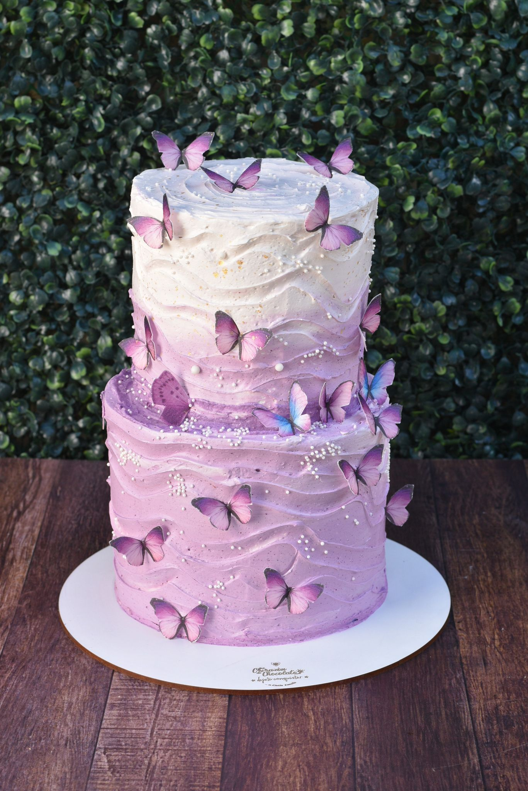
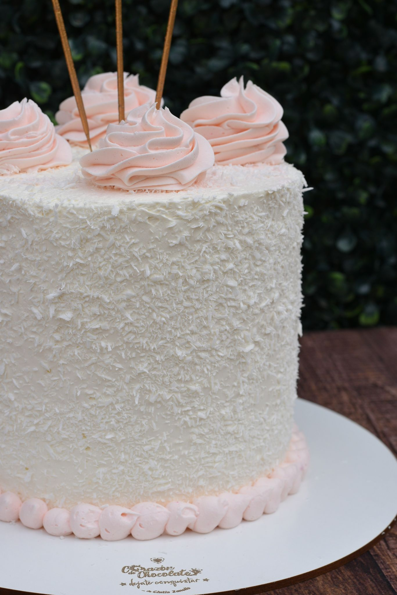
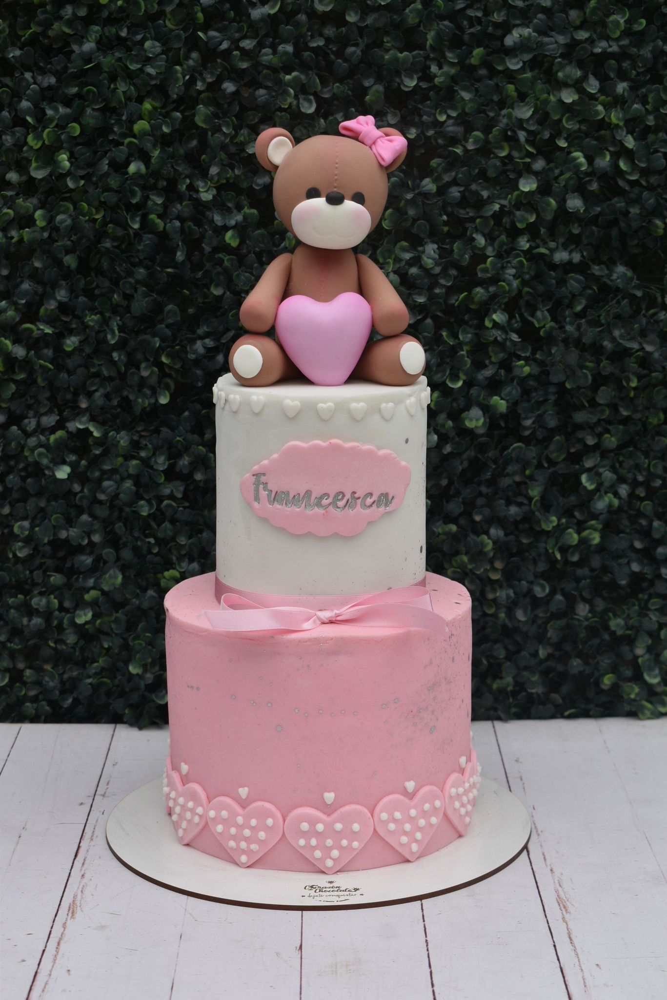

el equilibrio perfecto
entre lo exótico y lo tradicional

buttercream cake

Esta crema es una crema dulce hecha a base de azúcar glass (también conocida como impalpable) y manteca; usada para la cobertura de las tortas, los rellenos y la base adherente en los pasteles. Principalmente se elabora utilizando dos ingredientes básicos: Manteca y azúcar. Otro elemento importante, aunque no vital, es la leche; la cual dota de cremosidad y suavidad. Le podemos añadir otros ingredientes como colorantes!!!
-
Buttercream americano.
-
Buttercream italiano o de merengue italiano.
-
Buttercream suizo o de merengue suizo.

fondant cake
Para la preparación del fondant se utiliza agua, gelatina, glicerina, glucosa, mantequilla, azúcar impalpable y esencia o saborizante. Es una especie de pasta, con textura similar a la plastilina, utilizada en la elaboración de algunos dulces. Su función principal es recubrir y decorar y se utiliza mayoritariamente en el mundo de la pastelería (Pasteles, cupcakes, galletas, cakepops, etc). La palabra “fondant” tiene su origen en el idioma francés y es utilizada para expresar o definir algo “que se funde”. Posteriormente fue adaptada al idioma inglés para denominar la masa elástica y comestible que hoy conocemos con fondant. Agua y azúcar son sus principales ingredientes, que a su vez se suelen combinar con otros como la glucosa, mantequilla o manteca vegetal, gelatinas, malavaviscos y mucho más!
-
La gelatina sirve de aglutinante y proporciona una textura gomosa.
-
La glucosa potencia su elasticidad y, a su vez, aporta propiedades anti-cristalizantes, para evitar que la cubierta se vuelva arenosa.
-
La mantequilla o manteca vegetal proporciona suavidad, además de ser un factor lubricante para que la masa no sea tan pegajosa en su manipulación.
-
El azúcar glas o azúcar pulverizada ayuda a formar la masa y darle el irresistible dulzor.
.jpeg)
number letter